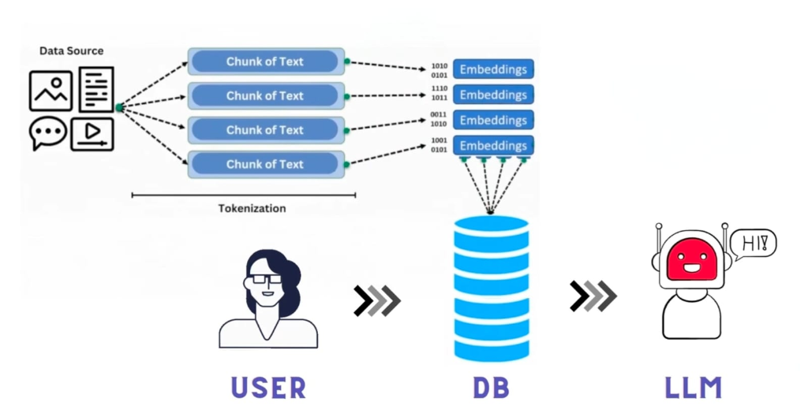
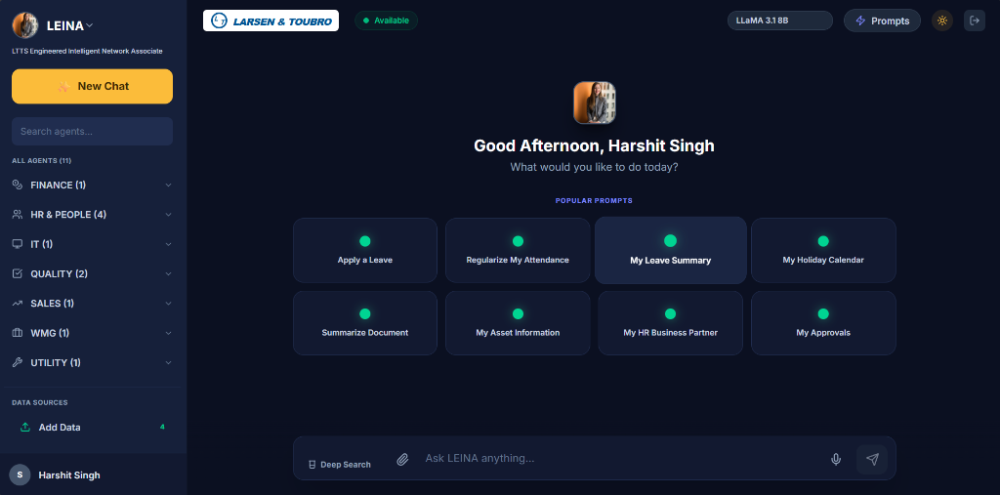

Local SOP RAG Chatbot &
LEINA Intelligent Assistant
A high-performance, privacy-preserving Retrieval-Augmented Generation system engineered for enterprise Standard Operating Procedures, featuring hierarchical chunking, dual-path hybrid search, multimodal vision AI, and zero data egress.
Zero cloud API calls. Complete data sovereignty via local Ollama inference.
ChromaDB 768-D dense vectors + BM25 keyword matching + Reciprocal Rank Fusion.
Automated diagram & flowchart captioning via local Qwen2.5-VL / LLaMA 3.1 8B.
Proprietary SOPs, payroll rules, or blueprints uploaded to public APIs violate GDPR and security policies.
Generic models invent plausible clauses. Employees cannot verify exact clauses or policy sections.
Employees spend 30-45 mins/day manually scrolling through massive PDF manuals.
All embeddings and inference execute on local hardware via Ollama. Zero external API calls.
Answers strictly quote policy text and terminate with exact source filename and section headers.
Combines semantic understanding with exact code/form keyword matching for 99%+ recall.
React 19 & Tailwind CSS
- Chat Simulator with streaming citations
- SOP Ingestion & Document Manager
- Real-time Tokenizer & Graph Inspector
- 11+ Departmental Agent Portals
Express & FastAPI Gateway
- Express Gateway: Session & DB handling
- FastAPI: PDF/DOCX multi-format parser
- Query Expansion & RRF Rank Fusion
- Confidence Gate (<0.45 cutoff)
ChromaDB & Ollama Inference
- ChromaDB: HNSW cosine vector index
- SQLite / MySQL: Relational metadata DB
- nomic-embed-text (768-dim embeddings)
- Qwen2.5-VL / LLaMA 3.1 8B (Vision LLM)

How Information Moves Through RAG
Documents (PDF/DOCX/TXT) and flowchart diagrams are parsed and tokenized.
nomic-embed-text converts semantic chunks into dense vector coordinates.
Stored in HNSW vector graph space for sub-20ms neighbor retrieval.
Top-3 relevant chunks are retrieved and injected into the LLM context prompt.
nomic-embed-text (768-D)
Vector Search: HNSW Cosine (< 20ms)
LLM: Qwen2.5-VL / LLaMA 3.1 8B
Multi-Format Parsing
- •
.pdfvia pypdf (page-aware) - •
.docxpython-docx tables - •
.txt / .mdUTF-8 raw parser - • PIL extracts embedded images
Two-Stage Chunking
- • Stage A: Heading regex split (SECTION, SOP-xxx, ##)
- • Stage B: Semantic split if chunk > 1500 chars
- • Cosine Sim < 0.55 split point
- • 180-char sliding overlap
Vision AI Captioning
- • Diagrams sent to Qwen2.5-VL
- • Dense technical captioning
- • Indexed as searchable chunk:
[SOP IMAGE #n] <caption> - • Visual flowchart querying
Batch ChromaDB Store
- •
nomic-embed-text768-D - • Batch size: 25 chunks/req
- • Stored in
sop_documents - • Auto-deduplication on update
Document: {file} | Section: {heading}\n\n{text} + Metadata (category, chunk_index)
Embeds query with nomic-embed-text. Catches synonyms, paraphrasing, and semantic intent.
In-memory keyword index. Essential for exact form IDs (Form 402) and extensions (ext. 4357).
Score(d) = Σ [ 1 / (60 + rank_vector) + 1 / (60 + rank_bm25) ]
ms-marco-MiniLM Top-3
You are an internal assistant for Acme Enterprise. You are an EXTRACTOR, not an author. RULES: 1. Extract facts strictly from SOP context. Never add outside knowledge or assumptions. 2. Use numbered steps for procedures, bullets for rules. 3. Terminate answer with exact citation: Source: <filename> (Section: <heading>) 4. If context has no answer, reply ONLY with fallback. 5. No greetings, no pleasantries, no conclusions.
0.2 • Top_P: 0.9 • Max Tokens: 512
Score = 1.0 − BestCosineDistance(Top3Chunks)
If Score < 0.45, query is flagged as out-of-scope enterprise query.
Responds in < 300ms without calling LLM: "This isn't covered in our SOPs — please contact the concerned department."

Key Workplace Capabilities
Finance, HR & People (4), IT Helpdesk, Quality (2), Sales, WMG, Utility.
Apply Leave, Regularize Attendance, Leave Summary, Holiday Calendar, Summarize Document.
Full-text deep search with document attachment & voice input microphone.
High-speed on-premise generative inference with active session history.
sop_documents (persistent storage)
Cosine Space ("hnsw:space": "cosine")
768 (nomic-embed-text)
source_file, heading, chunk_index, category, length
id, title, filename, category, content, chunk_count
session_id, user_id, title, created_at
id, session_id, sender, message, confidence_score
id, filename, file_type, size_bytes, ingested_at
data/sop_chatbot.db (node:sqlite)
MySQL Pool: mysql2 (Auto-schema migration)
Vector Storage: rag-service/chroma_db/
| Pipeline Stage | Operation Details | GPU Workstation (RTX 3060/4060) | CPU-Only Server |
|---|---|---|---|
| 1. Query Embedding | nomic-embed-text 768d vector calculation | 0.08 s | 0.25 s |
| 2. ChromaDB HNSW Search | Vector cosine similarity (top 15) | 15 ms | 35 ms |
| 3. BM25 Lexical + RRF | In-memory keyword ranking & fusion | 10 ms | 18 ms |
| 4. Cross-Encoder Rerank | ms-marco cross-attention Top-3 extraction | 0.15 s | 0.45 s |
| 5. LLM Answer Synthesis | Qwen2.5-VL / LLaMA 3.1 (~300 tokens) | 2.5 – 5.0 s | 12 – 30 s |
All document chunks, vector embeddings, and LLM inferences execute strictly on local machine memory and internal GPUs. No packets leave the internal enterprise network.
Fully adheres to GDPR, HIPAA, SOC 2, and defense industry security standards where proprietary SOPs, blueprints, and payroll records cannot leave company boundaries.
Every answer includes verifiable source document citations and section headers. Relational DB logs maintain an immutable audit log of queries and confidence scores.
Multi-agent architecture enables department-level document isolation (e.g., HR policies accessible to all staff; confidential financial SOPs restricted to authorized clearance).
- ✔ 80% Time Reduction: Instantaneous retrieval replaces tedious manual reading of hundreds of pages of SOPs.
- ✔ $0 Recurring Cloud Cost: Runs on existing enterprise infrastructure without monthly token subscription bills.
- ✔ 100% Audit Compliance: Eliminates human procedural errors with verifiable citations.
- P1 Agentic Tool Calling: Direct SAP, Oracle, and Workday API integration to execute actions (e.g. submit leave).
- P2 Graph RAG (Knowledge Graph): Entity-relation graphs for complex interdependent policy cross-referencing.
- P3 Voice-to-Voice AI Agents: Hands-free audio assistance for factory floor & field engineers.